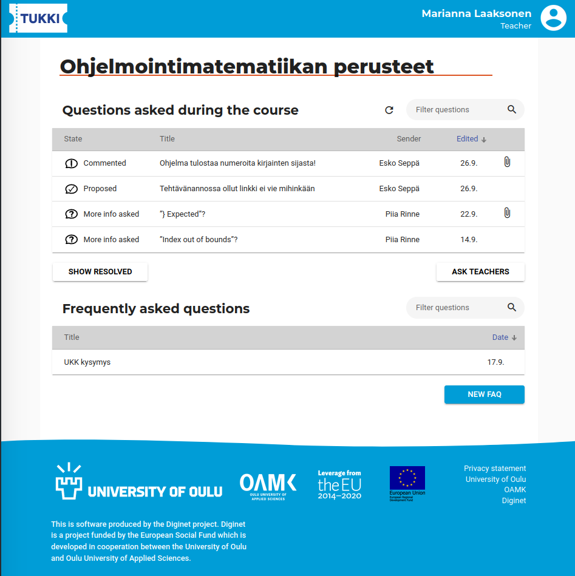
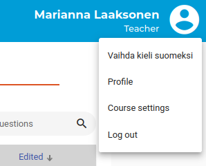
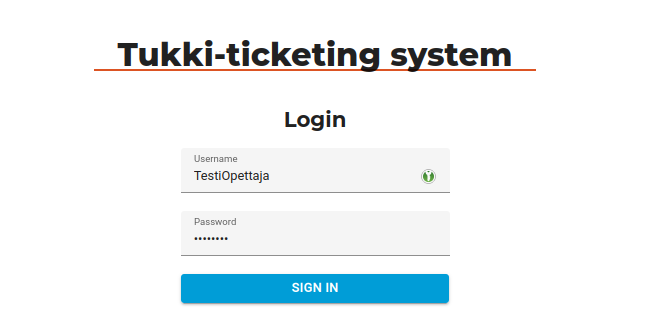
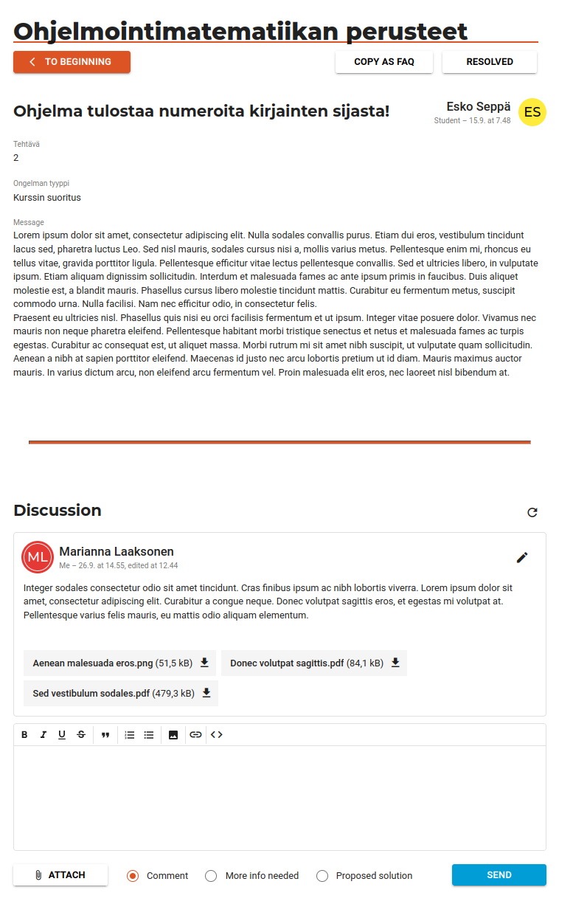
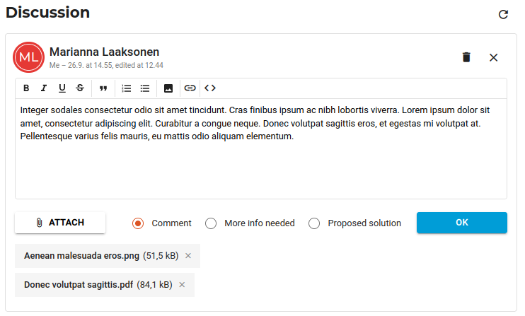
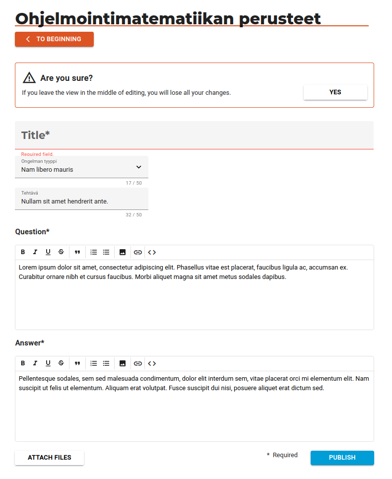
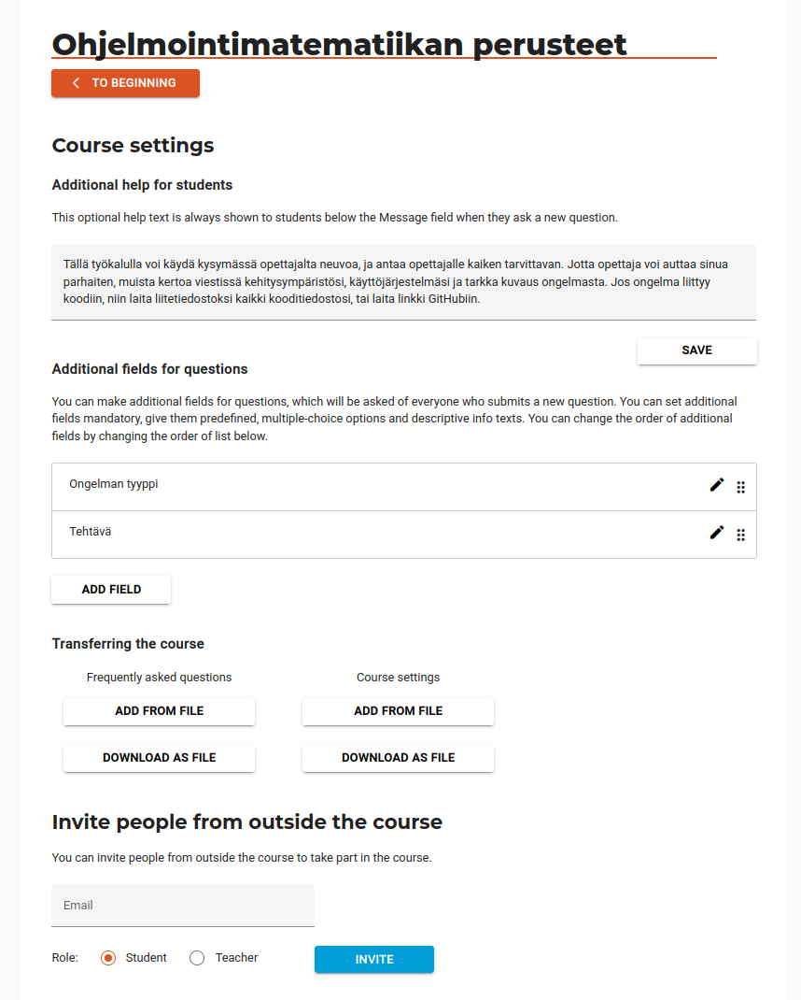
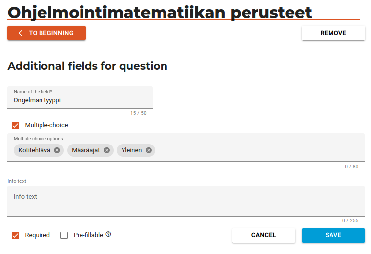

Front-end of Tukki -ticketing system
View this documentation in finnish
This is presentation of the frontend for the Tukki ticketing system I was implementing for the Diginet -project. I did it during 14 month period. It has been implemented with Angular. Other technical documentation about interface I’ve made can be read here.
Application is open source and the code can be viewed at my Github -repo
First, is useful to define what was the scope I did and what was done by others. Things I’ve done:
- Frontend architechture.
- Most of the implementation.
- Technical documentation.
- Almost all unit tests.
Things done by my team mates:
- Application functionality- and interface design.
- Some parts of the frontend: rich text editor, make a FAQ from question, profile view, additional fields in question views, privacy statement content.
Size of project’s (front-end) source code by numbers:
| Language | Files | Blank | Comment | Code |
|---|---|---|---|---|
| TypeScript | 123 | 1508 | 1854 | 10660 |
| HTML | 27 | 510 | 74 | 3179 |
| SCSS | 38 | 376 | 136 | 1766 |
| JSON | 2 | 0 | 0 | 319 |
| Total | 190 | 2394 | 2064 | 15924 |
Demonstration of implementation
I won’t go through all the functions or views of the system, but I’ll show you some of the highlights. The application is designed to be used primarily on a computer screen or tablet, but is also usable on a phone screen. Attention has been paid to accessibility.
The list of questions is the main view of the application:

The app can be embedded in the Moodle learning system, or used as a standalone web application. Above is the latter view. When logged in as a teacher, you can see all the questions asked to teachers in the course. The table is made using the Angular Material library. The rows can be sorted by different columns and filtered by the information contained in the different questions. The content of the table is updated periodically or manually.

You can change the language used in the app to Finnish.

When embedded, the app gets login information from Moodle. Outside Moodle the login is done first manually with a login and password. It uses authorization code flow. After that authorization is done with a cookie.

In the individual question view, the user can view the information about the question. The teacher can set the question as resolved and the sender of the question can remove or edit it. Teachers and students can add comments to the question, which are displayed below the question. Users can edit their own comments.

The name, role, avatar icon, and the date the comment was posted and edited are displayed with the question and comment.
When editing a comment, you can delete it, change the status of the comment or text, and add or remove attachments. I made attachment component by myself.

Files are sent in parallel and the status of their transmission is updated with progress bars. I made use for RxJS library with this.

Teachers can ask Frequently Asked Questions. Here the user has selected “Beginning” in the middle of editing, in which case they will be asked for confirmation. Forms are validated using Angular Reactive Forms.

Teachers on the course can change the course settings, download and add frequently asked questions and course settings, and invite people outside courses to join it. Clicking on the edit icon for additional fields will open an editing view for them.

Edit view for additional fields. The addition of multiple options is implemented using Angular Material chips.